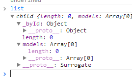

前言
点保存时候不注意发出来了，有需要的朋友将就看吧，还在更新......
几个月前学习了一下backbone，这段时间也用了下，感觉之前对backbone的学习很是基础，前几天有个园友问我如何将路由的#改为其他
我其实想说这个不能乱改，又怕不熟悉误人子弟，所以今天我们来一起重新学习下他，看看会不会带来不一样的感觉
我在博客园nuysoft的博客看到了backbone的分析，可惜没有写完，不失为一个遗憾，希望作者坚持下去，水平高得贡献出来哟（@nuysoft）
然后，网上backbone基础用法的学习文章很多，感觉就nuysoft的深入，只不过多是点一下有点可惜，再次希望作者坚持下去......
Web应用越来越关注前端，现在一个服务器端可能要对付五个前端，前端的业务逻辑复杂，各种问题层出不穷，现实对javascript程序的重用性、健壮性提出了更高的要求
要求提高了，但是并不会给你更多的时间，反而为了抢占移动市场份额而拉快开发速度，现在的前端不可谓不难
PS：如果你的公司是互联网公司且不重视前端的话，你可以来我们公司啊......
Backbone是一个基于MVC模式的架构，本身强依赖与underscore，所以上个星期我们初略的学习了下underscore，有了一个大概印象
非强制依赖于jquery/zepto，然后require是一个很好的基友，建议不要放过
backbone据我使用来看，有几个优点：
① 模板引擎避免js中嵌入过多html代码，这是一种结构数据分离的体现，但是他要归功于underscore了
然后他的优点我用的时候就没有了......
以上说法其实有点坑爹，我们为了减少backbone的size，所以对backbone做了删除，最后只用到了其中的view（事件处理），控制器我们自己实现了
所以，我应该还未学习到backbone的精华，好了，前面扯多了，我们正式开始学习吧，这里附上之前的学习博客：
http://www.cnblogs.com/yexiaochai/p/3219402.html
http://www.cnblogs.com/yexiaochai/p/3221081.html
例子参考：http://www.ibm.com/developerworks/cn/web/wa-backbonejs/
简单例子
我们今天首先做一个简单的例子，然后通过例子去读backbone的源码，明天再整体进行学习，这个例子当然就是我们伟大的官方例子了......
第一步，页面结构


1 <!DOCTYPE html> 2 <html lang="en"> 3 <head> 4 <meta charset="utf-8"> 5 <title>Backbone.js Todos</title> 6 <link rel="stylesheet" href="todos.css" /> 7 </head> 8 <body> 9 <div id="todoapp"> 10 <header> 11 <h1> 12 Todos</h1> 13 <input id="new-todo" type="text" placeholder="What needs to be done?"> 14 </header> 15 <section id="main"> 16 <input id="toggle-all" type="checkbox"> 17 <label for="toggle-all"> 18 Mark all as complete</label> 19 <ul id="todo-list"> 20 </ul> 21 </section> 22 <footer> 23 <a id="clear-completed">Clear completed</a> 24 <div id="todo-count"> 25 </div> 26 </footer> 27 </div> 28 <div id="instructions"> 29 Double-click to edit a todo. 30 </div> 31 <div id="credits"> 32 Created by 33 <br /> 34 <a href="http://jgn.me/">Jérôme Gravel-Niquet</a>. 35 <br /> 36 Rewritten by: <a href="http://addyosmani.github.com/todomvc">TodoMVC</a>. 37 </div> 38 <script src="../../test/vendor/json2.js"></script> 39 <script src="../../test/vendor/jquery.js"></script> 40 <script src="../../test/vendor/underscore.js"></script> 41 <script src="../../backbone.js"></script> 42 <script src="../backbone.localStorage.js"></script> 43 <script src="todos.js"></script> 44 <!-- Templates --> 45 <script type="text/template" id="item-template"> 46 <div class="view"> 47 <input class="toggle" type="checkbox" <%= done ? 'checked="checked"' : '' %> /> 48 <label><%- title %></label> 49 <a class="destroy"></a> 50 </div> 51 <input class="edit" type="text" value="<%- title %>" /> 52 </script> 53 <script type="text/template" id="stats-template"> 54 <% if (done) { %> 55 <a id="clear-completed">Clear <%= done %> completed <%= done == 1 ? 'item' : 'items' %></a> 56 <% } %> 57 <div class="todo-count"><b><%= remaining %></b> <%= remaining == 1 ? 'item' : 'items' %> left</div> 58 </script> 59 </body> 60 </html>
页面结构比较简单，其实就只有一个文本框，然后下面有一个用于显示的列表，当然页面中有我们用到的模板
第二步，定义model
然后我们需要定义我们备忘录的model了
1 // Our basic **Todo** model has `title`, `order`, and `done` attributes. 2 var Todo = Backbone.Model.extend({ 3 4 // Default attributes for the todo item. 5 defaults: function () { 6 return { 7 title: "empty todo...", 8 order: Todos.nextOrder(), 9 done: false 10 }; 11 }, 12 // Toggle the `done` state of this todo item. 13 toggle: function () { 14 this.save({ done: !this.get("done") }); 15 } 16 });
这里需要注意他这种写法，我们后面会详细说明，这里先简单来看看这个实例化的结果
我们看到一个Model实例化后有以上属性，主要注意点是title与down，事实上我们可以使用model的get/set去操作这些属性，model的主要工作其实就是维护他的属性
model维护的属性可能还会与服务器端发生通信，通信时会用到save方法，我们这里不予关注
1 // "name" attribute is set into the model 2 var team1 = new App.Models.Team({ 3 name : "name1" 4 }); 5 console.log(team1.get("name")); // prints "name1" 6 7 // "name" attribute is set with a new value 8 team1.set({ 9 name : "name2" 10 }); 11 console.log(team1.get("name")); //prints "name2"
这里需要注意的一点是，数据变化时候会引发Model的change方法，如果在change方法中，绑定对dom的操作，那么model变化页面就会自动发生变化，这就是model这点小九九干的事情
代码内部具体干什么的我们暂时不管，继续往下看，有了model后就会有集合
第三步，集合
1 var TodoList = Backbone.Collection.extend({ 2 // Reference to this collection's model. 3 model: Todo, 4 // Save all of the todo items under the `"todos-backbone"` namespace. 5 localStorage: new Backbone.LocalStorage("todos-backbone"), 6 // Filter down the list of all todo items that are finished. 7 done: function () { 8 return this.where({ done: true }); 9 }, 10 // Filter down the list to only todo items that are still not finished. 11 remaining: function () { 12 return this.without.apply(this, this.done()); 13 }, 14 // We keep the Todos in sequential order, despite being saved by unordered 15 // GUID in the database. This generates the next order number for new items. 16 nextOrder: function () { 17 if (!this.length) return 1; 18 return this.last().get('order') + 1; 19 }, 20 // Todos are sorted by their original insertion order. 21 comparator: 'order' 22 });
这里对集合与之前定义的Model做了一个映射关系，他这个集合有何作用已经如何发生变化的我们后面详细说明
这里我只能说，这个集合时保存Model的列表，并在内部定义了一些操作model的方法

集合与model息息相关，事实上每个model内部都有一个collection的映射对象，一旦发生映射，那么model变化collection内部也会发生变化，这里的细节我们后面点说
第四步，TodoView
1 var TodoView = Backbone.View.extend({ 2 3 //... is a list tag. 4 tagName: "li", 5 6 // Cache the template function for a single item. 7 template: _.template($('#item-template').html()), 8 9 // The DOM events specific to an item. 10 events: { 11 "click .toggle": "toggleDone", 12 "dblclick .view": "edit", 13 "click a.destroy": "clear", 14 "keypress .edit": "updateOnEnter", 15 "blur .edit": "close" 16 }, 17 18 // The TodoView listens for changes to its model, re-rendering. Since there's 19 // a one-to-one correspondence between a **Todo** and a **TodoView** in this 20 // app, we set a direct reference on the model for convenience. 21 initialize: function () { 22 this.listenTo(this.model, 'change', this.render); 23 this.listenTo(this.model, 'destroy', this.remove); 24 }, 25 26 // Re-render the titles of the todo item. 27 render: function () { 28 this.$el.html(this.template(this.model.toJSON())); 29 this.$el.toggleClass('done', this.model.get('done')); 30 this.input = this.$('.edit'); 31 return this; 32 }, 33 34 // Toggle the `"done"` state of the model. 35 toggleDone: function () { 36 this.model.toggle(); 37 }, 38 39 // Switch this view into `"editing"` mode, displaying the input field. 40 edit: function () { 41 this.$el.addClass("editing"); 42 this.input.focus(); 43 }, 44 45 // Close the `"editing"` mode, saving changes to the todo. 46 close: function () { 47 var value = this.input.val(); 48 if (!value) { 49 this.clear(); 50 } else { 51 this.model.save({ title: value }); 52 this.$el.removeClass("editing"); 53 } 54 }, 55 56 // If you hit `enter`, we're through editing the item. 57 updateOnEnter: function (e) { 58 if (e.keyCode == 13) this.close(); 59 }, 60 61 // Remove the item, destroy the model. 62 clear: function () { 63 this.model.destroy(); 64 } 65 66 });
熟悉backbone的朋友一定对这段代码尤其熟悉（因为我们只用到了view，model与control全部自己写的，所以我最熟悉的就是这个......）
上面的代码会形成一个view，view实例化时会执行initialize中的方法，需要显示则需要执行render方法（重写）
render结束后页面的交互全部放到了events里面，各位既然用到了backbone，就不要自己随意以on的形式绑定事件了
在view可以为el指定dom结构，新建的view形成的dom就会往里面装
总而言之，View的重点是模板引擎与事件绑定，这里的view不是入口方法，我们看下一个view
第五步，入口AppView
1 var AppView = Backbone.View.extend({ 2 3 // Instead of generating a new element, bind to the existing skeleton of 4 // the App already present in the HTML. 5 el: $("#todoapp"), 6 7 // Our template for the line of statistics at the bottom of the app. 8 statsTemplate: _.template($('#stats-template').html()), 9 10 // Delegated events for creating new items, and clearing completed ones. 11 events: { 12 "keypress #new-todo": "createOnEnter", 13 "click #clear-completed": "clearCompleted", 14 "click #toggle-all": "toggleAllComplete" 15 }, 16 17 // At initialization we bind to the relevant events on the `Todos` 18 // collection, when items are added or changed. Kick things off by 19 // loading any preexisting todos that might be saved in *localStorage*. 20 initialize: function () { 21 22 this.input = this.$("#new-todo"); 23 this.allCheckbox = this.$("#toggle-all")[0]; 24 25 this.listenTo(Todos, 'add', this.addOne); 26 this.listenTo(Todos, 'reset', this.addAll); 27 this.listenTo(Todos, 'all', this.render); 28 29 this.footer = this.$('footer'); 30 this.main = $('#main'); 31 32 Todos.fetch(); 33 }, 34 35 // Re-rendering the App just means refreshing the statistics -- the rest 36 // of the app doesn't change. 37 render: function () { 38 var done = Todos.done().length; 39 var remaining = Todos.remaining().length; 40 41 if (Todos.length) { 42 this.main.show(); 43 this.footer.show(); 44 this.footer.html(this.statsTemplate({ done: done, remaining: remaining })); 45 } else { 46 this.main.hide(); 47 this.footer.hide(); 48 } 49 50 this.allCheckbox.checked = !remaining; 51 }, 52 53 // Add a single todo item to the list by creating a view for it, and 54 // appending its element to the `<ul>`. 55 addOne: function (todo) { 56 var view = new TodoView({ model: todo }); 57 this.$("#todo-list").append(view.render().el); 58 }, 59 60 // Add all items in the **Todos** collection at once. 61 addAll: function () { 62 Todos.each(this.addOne, this); 63 }, 64 65 // If you hit return in the main input field, create new **Todo** model, 66 // persisting it to *localStorage*. 67 createOnEnter: function (e) { 68 if (e.keyCode != 13) return; 69 if (!this.input.val()) return; 70 71 Todos.create({ title: this.input.val() }); 72 this.input.val(''); 73 }, 74 75 // Clear all done todo items, destroying their models. 76 clearCompleted: function () { 77 _.invoke(Todos.done(), 'destroy'); 78 return false; 79 }, 80 81 toggleAllComplete: function () { 82 var done = this.allCheckbox.checked; 83 Todos.each(function (todo) { todo.save({ 'done': done }); }); 84 } 85 86 });
很遗憾的是，这个代码没有用到路由相关的知识，至此就结束了，因为路由相关的知识是单页应用的一大重点，但是对我们学习来说够了
这里定义了AppView后便实例化了，我们这里来详细读读这个入口函数
① 初始化操作
1 initialize: function () { 2 3 this.input = this.$("#new-todo"); 4 this.allCheckbox = this.$("#toggle-all")[0]; 5 6 this.listenTo(Todos, 'add', this.addOne); 7 this.listenTo(Todos, 'reset', this.addAll); 8 this.listenTo(Todos, 'all', this.render); 9 10 this.footer = this.$('footer'); 11 this.main = $('#main'); 12 13 Todos.fetch(); 14 },
首先这里做了初始化操作，在这里，我们可以开开心心定义一些后面会用到的dom，这里有一个比较有意思的方法：
this.$();//其实是this.root.find()，这个可以保证你找到正确的元素
在单页应用中，id的唯一性收到了吹残，所以获得元素的方式得到了便会，以上是一种，不明白以上方法的同学喜欢用：
this.$el.find();//$el事实上就是根元素
fetch方法用于初始化集合数据，意思是Todos.fetch();执行结束后，集合就被model给填充了（这里在localstorage中读取了数据）
Todos填充数据后，便会调用本身的render方法将数据以dom形式呈现在我们眼前
1 this.listenTo(Todos, 'add', this.addOne); 2 this.listenTo(Todos, 'reset', this.addAll); 3 this.listenTo(Todos, 'all', this.render);
这里的的listenTo事实上是一种自定义事件的写法，fetch时候触发了其中的all事件，所以执行了render方法渲染页面
这里页面初始化完成了，当然，一开始我们列表其实是空的
② 增加操作
增加操作简单说一下即可，这里为new-todo（文本框）绑定了keypress事件，事件会触发createOnEnter函数
1 createOnEnter: function (e) { 2 if (e.keyCode != 13) return; 3 if (!this.input.val()) return; 4 5 Todos.create({ title: this.input.val() }); 6 this.input.val(''); 7 },
这里愉快的使用集合create方法创建了一个model，当然他触发自己绑定的add事件，于是执行了
1 addOne: function (todo) { 2 var view = new TodoView({ model: todo }); 3 this.$("#todo-list").append(view.render().el); 4 },
这个操作自然不是省油的灯，他本身也是绑定了change事件的，于是高高兴兴在页面中新增了一条数据：
1 initialize: function () { 2 this.listenTo(this.model, 'change', this.render); 3 this.listenTo(this.model, 'destroy', this.remove); 4 }, 5 6 // Re-render the titles of the todo item. 7 render: function () { 8 this.$el.html(this.template(this.model.toJSON())); 9 this.$el.toggleClass('done', this.model.get('done')); 10 this.input = this.$('.edit'); 11 return this; 12 },
至此整个逻辑基本结束，其它方面我这里暂时不涉及，这个模式比较好的是，我们就只需要关注model数据变化即可，页面上显示的东西就不管了
PS：说是不管，其实一开始就管完了，只是需要触发事件即可
至此，我们基本例子分析结束，我们下面带着这个例子去学习下backbone的源码，这里又不得不叹息，这里未使用路由（控制器）功能
实现继承-extend
我们无论定义Model还是View时候都是这样干的：
var Todo = Backbone.Model.extend({}) var TodoList = Backbone.Collection.extend({}) var TodoView = Backbone.View.extend({})
其实这个extend着实使人疑惑，因为在underscore学习时候，我们知道他是这样的：
1 // 将一个或多个对象的属性(包含原型链中的属性), 复制到obj对象, 如果存在同名属性则覆盖 2 _.extend = function(obj) { 3 // each循环参数中的一个或多个对象 4 each(slice.call(arguments, 1), function(source) { 5 // 将对象中的全部属性复制或覆盖到obj对象 6 for(var prop in source) { 7 obj[prop] = source[prop]; 8 } 9 }); 10 return obj; 11 };
这个东西和上述实现差了一大截，于是进入源码一看，事实上我们看到的应该是inherits方法，但是1.0灭掉了inherits方法，只剩下了extend了
1 var extend = function(protoProps, staticProps) { 2 var parent = this; 3 var child; 4 5 // The constructor function for the new subclass is either defined by you 6 // (the "constructor" property in your `extend` definition), or defaulted 7 // by us to simply call the parent's constructor. 8 if (protoProps && _.has(protoProps, 'constructor')) { 9 child = protoProps.constructor; 10 } else { 11 child = function(){ return parent.apply(this, arguments); }; 12 } 13 14 // Add static properties to the constructor function, if supplied. 15 _.extend(child, parent, staticProps); 16 17 // Set the prototype chain to inherit from `parent`, without calling 18 // `parent`'s constructor function. 19 var Surrogate = function(){ this.constructor = child; }; 20 Surrogate.prototype = parent.prototype; 21 child.prototype = new Surrogate; 22 23 // Add prototype properties (instance properties) to the subclass, 24 // if supplied. 25 if (protoProps) _.extend(child.prototype, protoProps); 26 27 // Set a convenience property in case the parent's prototype is needed 28 // later. 29 child.__super__ = parent.prototype; 30 31 return child; 32 }; 33 34 // Set up inheritance for the model, collection, router, view and history. 35 Model.extend = Collection.extend = Router.extend = View.extend = History.extend = extend;
这个家伙又是如何实现继承的，我们这里详细来看看，首先我们将这段代码分离出来：
1 var hasOwnProperty = Object.prototype.hasOwnProperty; 2 var slice = Array.prototype.slice; 3 var nativeForEach = Array.prototype.forEach; 4 var _ = {}; 5 6 var each = _.each = _.forEach = function (obj, iterator, context) { 7 if (obj == null) 8 return; 9 if (nativeForEach && obj.forEach === nativeForEach) { 10 obj.forEach(iterator, context); 11 } else if (obj.length === +obj.length) { 12 for (var i = 0, l = obj.length; i < l; i++) { 13 if (i in obj && iterator.call(context, obj[i], i, obj) === breaker) 14 return; 15 } 16 } else { 17 for (var key in obj) { 18 if (_.has(obj, key)) { 19 if (iterator.call(context, obj[key], key, obj) === breaker) 20 return; 21 } 22 } 23 } 24 } 25 26 _.has = function (obj, key) { 27 return hasOwnProperty.call(obj, key); 28 }; 29 30 _.extend = function (obj) { 31 each(slice.call(arguments, 1), function (source) { 32 for (var prop in source) { 33 obj[prop] = source[prop]; 34 } 35 }); 36 return obj; 37 }; 38 39 var extend = function (protoProps, staticProps) { 40 var parent = this; 41 var child; 42 if (protoProps && _.has(protoProps, 'constructor')) { 43 child = protoProps.constructor; 44 } else { 45 child = function () { return parent.apply(this, arguments); }; 46 } 47 _.extend(child, parent, staticProps); 48 var Surrogate = function () { this.constructor = child; }; 49 Surrogate.prototype = parent.prototype; 50 child.prototype = new Surrogate; 51 if (protoProps) _.extend(child.prototype, protoProps); 52 child.__super__ = parent.prototype; 53 return child; 54 }; 55 56 57 var P = function () { 58 this.a = 1; 59 this.b = 2; 60 }; 61 62 P.prototype.aa = function () { 63 alert(this.a); 64 } 65 66 P.extend = extend; 67 68 var C = P.extend({ 69 c: 3, 70 cc: function () { 71 alert(this.c); 72 } 73 }); 74 75 var s = '';
1 var c = new C; 2 c.cc();//3 3 c.aa();//1
backbone实现的继承以最基础的继承，因为他只支持一层的继承，要再多可能这个做法就不好使了，原来inherits其实可以多层继承的......
反正，我们来读一读extend代码
① parent=this
这个代码其实是保留当前函数，比如View或者Model，后面的child会继承他的方法
② protoProps
protoProps实际上是原型方法，如果具有constactor属性，变直接继承之，否则重新定义一个函数，函数初始化（构造函数）时会调用parent的构造函数
PS：而这里parent会执行一些初始化操作，然后调用this.initialize.apply(this, arguments); 所以我们代码中的initialize一定会执行
③ 复制静态属性
然后使用将parent静态属性一一收入成自己的
_.extend(child, parent, staticProps);
④ 经典继承法
1 var Surrogate = function () { this.constructor = child; }; 2 Surrogate.prototype = parent.prototype; 3 child.prototype = new Surrogate; 4 if (protoProps) _.extend(child.prototype, protoProps); 5 child.__super__ = parent.prototype;
然后使用此经典的方法实现继承，最终返回给我们child，注意其中的_.extend(child.prototype, protoProps);我们增加的属性全部给加到了原型链上了
至此，backbone的基本继承，我们阅读完毕，现在看到以下代码要清除发生了什么事才行
var TodoView = Backbone.View.extend({}）
下面我们来看看backbone的事件机制
事件机制-Events
backbone事件一块就只放出了三个接口：bind、unbind、trigger
Events 是一个可以被mix到任意对象的模块，它拥有让对象绑定和触发自定义事件的能力。
事件在被绑定之前是不需要事先声明的，还可以携带参数。我们通过一个例子来看：
var object = {}; _.extend(object, Backbone.Events); object.bind("alert", function(msg) { alert("Triggered " + msg); }); object.trigger("alert", "www.csser.com");
bind用于注册事件，unbind注销事件，trigger触发事件，但是内部的事件一块远不止如此
PS：老夫突然发现我看的中文api是0.5.3的版本！！！fuck me!!! 1.1放出了这么多的接口，额......
首先我们来看一看他Events的源码：
1 var Events = Backbone.Events = { 2 3 // Bind an event to a `callback` function. Passing `"all"` will bind 4 // the callback to all events fired. 5 on: function(name, callback, context) { 6 if (!eventsApi(this, 'on', name, [callback, context]) || !callback) return this; 7 this._events || (this._events = {}); 8 var events = this._events[name] || (this._events[name] = []); 9 events.push({callback: callback, context: context, ctx: context || this}); 10 return this; 11 }, 12 13 // Bind an event to only be triggered a single time. After the first time 14 // the callback is invoked, it will be removed. 15 once: function(name, callback, context) { 16 if (!eventsApi(this, 'once', name, [callback, context]) || !callback) return this; 17 var self = this; 18 var once = _.once(function() { 19 self.off(name, once); 20 callback.apply(this, arguments); 21 }); 22 once._callback = callback; 23 return this.on(name, once, context); 24 }, 25 26 // Remove one or many callbacks. If `context` is null, removes all 27 // callbacks with that function. If `callback` is null, removes all 28 // callbacks for the event. If `name` is null, removes all bound 29 // callbacks for all events. 30 off: function(name, callback, context) { 31 var retain, ev, events, names, i, l, j, k; 32 if (!this._events || !eventsApi(this, 'off', name, [callback, context])) return this; 33 if (!name && !callback && !context) { 34 this._events = {}; 35 return this; 36 } 37 38 names = name ? [name] : _.keys(this._events); 39 for (i = 0, l = names.length; i < l; i++) { 40 name = names[i]; 41 if (events = this._events[name]) { 42 this._events[name] = retain = []; 43 if (callback || context) { 44 for (j = 0, k = events.length; j < k; j++) { 45 ev = events[j]; 46 if ((callback && callback !== ev.callback && callback !== ev.callback._callback) || 47 (context && context !== ev.context)) { 48 retain.push(ev); 49 } 50 } 51 } 52 if (!retain.length) delete this._events[name]; 53 } 54 } 55 56 return this; 57 }, 58 59 // Trigger one or many events, firing all bound callbacks. Callbacks are 60 // passed the same arguments as `trigger` is, apart from the event name 61 // (unless you're listening on `"all"`, which will cause your callback to 62 // receive the true name of the event as the first argument). 63 trigger: function(name) { 64 if (!this._events) return this; 65 var args = slice.call(arguments, 1); 66 if (!eventsApi(this, 'trigger', name, args)) return this; 67 var events = this._events[name]; 68 var allEvents = this._events.all; 69 if (events) triggerEvents(events, args); 70 if (allEvents) triggerEvents(allEvents, arguments); 71 return this; 72 }, 73 74 // Tell this object to stop listening to either specific events ... or 75 // to every object it's currently listening to. 76 stopListening: function(obj, name, callback) { 77 var listeners = this._listeners; 78 if (!listeners) return this; 79 var deleteListener = !name && !callback; 80 if (typeof name === 'object') callback = this; 81 if (obj) (listeners = {})[obj._listenerId] = obj; 82 for (var id in listeners) { 83 listeners[id].off(name, callback, this); 84 if (deleteListener) delete this._listeners[id]; 85 } 86 return this; 87 } 88 89 };
这里统一使用了eventApi这个函数：
1 // Regular expression used to split event strings. 2 var eventSplitter = /\s+/; 3 4 // Implement fancy features of the Events API such as multiple event 5 // names `"change blur"` and jQuery-style event maps `{change: action}` 6 // in terms of the existing API. 7 var eventsApi = function(obj, action, name, rest) { 8 if (!name) return true; 9 10 // Handle event maps. 11 if (typeof name === 'object') { 12 for (var key in name) { 13 obj[action].apply(obj, [key, name[key]].concat(rest)); 14 } 15 return false; 16 } 17 18 // Handle space separated event names. 19 if (eventSplitter.test(name)) { 20 var names = name.split(eventSplitter); 21 for (var i = 0, l = names.length; i < l; i++) { 22 obj[action].apply(obj, [names[i]].concat(rest)); 23 } 24 return false; 25 } 26 27 return true; 28 };
① 第一个参数为一个对象，其实指向的是调用者，因为Events对象都是被作为 继承/扩展 者使用
② 第二个参数为你的具体操作（on/off/trigger）
③ name可算是这个对象注册的这个事件的唯一标识了，注册事件后后面会用他来读取
④ 最后是传入的回调函数，并且带有作用域
而上述调用点又在其它地方，我们这里将上述代码连起来：
① 首先一个对象继承了Events对象
var obj = {}; _.extend(obj, Backbone.Events)
② 其次我们为他注册一个alert事件
obj.on('alert', function (msg) {
alert(msg);
});
此时会调用由Events继承而来的方法on，并且传入两个参数：alert与回调函数，而后会调用eventApi（私有方法）处理这个event对象
PS：此处传入的那么不是对象也没有任何复杂应用所以直接返回true了，像那么包含“:”，或者包含空格就会做特殊处理，我们这里暂时不管
③ 定义对象的events属性，该属性用于存储该对象保存的所有事件
1 on: function(name, callback, context) { 2 if (!eventsApi(this, 'on', name, [callback, context]) || !callback) return this; 3 this._events || (this._events = {}); 4 var events = this._events[name] || (this._events[name] = []); 5 events.push({callback: callback, context: context, ctx: context || this}); 6 return this; 7 },
处理结束后，这里便会多出一个对象了：
③ 触发事件，触发事件相对比较简单，可以选择传入参数
obj.trigger("alert", "an event");
触发事件，当然是调用的trigger方法：
1 trigger: function(name) { 2 if (!this._events) return this; 3 var args = slice.call(arguments, 1); 4 if (!eventsApi(this, 'trigger', name, args)) return this; 5 var events = this._events[name]; 6 var allEvents = this._events.all; 7 if (events) triggerEvents(events, args); 8 if (allEvents) triggerEvents(allEvents, arguments); 9 return this; 10 },
这里会通过name在events属性中获取当前对象，调用triggerEvents局部函数调用之，这里有两点需要注意：
1 这里的args是除，name以外传入的参数
2 这里会触发name为all的事件，无论如何都会触发，各位这里要回想起来前面集合的listenerTo方法哦
1 var triggerEvents = function(events, args) { 2 var ev, i = -1, l = events.length, a1 = args[0], a2 = args[1], a3 = args[2]; 3 switch (args.length) { 4 case 0: while (++i < l) (ev = events[i]).callback.call(ev.ctx); return; 5 case 1: while (++i < l) (ev = events[i]).callback.call(ev.ctx, a1); return; 6 case 2: while (++i < l) (ev = events[i]).callback.call(ev.ctx, a1, a2); return; 7 case 3: while (++i < l) (ev = events[i]).callback.call(ev.ctx, a1, a2, a3); return; 8 default: while (++i < l) (ev = events[i]).callback.apply(ev.ctx, args); 9 } 10 };
然后这里做了下简单的处理，高高兴兴将我们定义的事件执行了，于是backbone事件机制的第一段讲解也结束了，较详细的讲解后面点再来
在此我们可以看到，backbone内部的事件机制，其实与javascript事件绑定那块没什么联系，只不过是自己内部的实现而已，这里最后补充一点：
1 var listenMethods = { listenTo: 'on', listenToOnce: 'once' }; 2 3 // Inversion-of-control versions of `on` and `once`. Tell *this* object to 4 // listen to an event in another object ... keeping track of what it's 5 // listening to. 6 _.each(listenMethods, function (implementation, method) { 7 Events[method] = function (obj, name, callback) { 8 var listeners = this._listeners || (this._listeners = {}); 9 var id = obj._listenerId || (obj._listenerId = _.uniqueId('l')); 10 listeners[id] = obj; 11 if (typeof name === 'object') callback = this; 12 obj[implementation](name, callback, this); 13 return this; 14 }; 15 });
页面上调用的listenTo其实就是on方法
模型-Model
构造函数
Model在服务器端来说很是关键，记得前几年老夫还在搞.net最先干的事情就是建造实体，不知道现在怎么样了......
首先看看其继承源码：
1 var Model = Backbone.Model = function (attributes, options) { 2 var defaults; 3 var attrs = attributes || {}; 4 options || (options = {}); 5 this.cid = _.uniqueId('c'); 6 this.attributes = {}; 7 _.extend(this, _.pick(options, modelOptions)); 8 if (options.parse) attrs = this.parse(attrs, options) || {}; 9 if (defaults = _.result(this, 'defaults')) { 10 attrs = _.defaults({}, attrs, defaults); 11 } 12 this.set(attrs, options); 13 this.changed = {}; 14 this.initialize.apply(this, arguments); 15 };
构造函数中本身没有干太多事情：
① 首先为该model定义了唯一的cid（其中的uniqueId方法内部维护着一个id，这个闭包知识点，各位自己去看吧）
② 初始化model默认的属性，比如collection就是必须拥有的，如果定义了的话就直接搞给对象
③ parse是为了兼容不是json数据时候需要做的处理，我们这里直接忽略不要json的场景
④ 获取defaults对象（如果是函数需要返回对象）
⑤ 调用原型链中的set方法，将默认的属性搞到对象中去，set干的事情比较多，我们后面点说
反正他产生的结果就是对象默认会多一些属性值
然后开始调用underscore的exentd扩展对象的原型链了（尼玛，backbone确实强依赖underscore啊，压根搞不掉）
扩展原型链
下面开始扩展Model原型链了，其实这样读下来，backbone的代码是很有调理的，很好读，我们这里捡几个重要的说（我不知道哪个重要只能挑我知道的）
① changed
changed属性记录了每次调用set方法时, 被改变数据的key集合
② validationError
set model 时候会执行validate方法，如果验证失败便会将结果返回该变量
③ idAttribute
每个模型的唯一标识属性(默认为"id", 通过修改idAttribute可自定义id属性名)
如果在设置数据时包含了id属性, 则id将会覆盖模型的id，id用于在Collection集合中查找和标识模型, 与后台接口通信时也会以id作为一条记录的标识
var Meal = Backbone.Model.extend({ idAttribute: "_id" }); var cake = new Meal({ _id: 1, name: "Cake" }); alert("Cake id: " + cake.id);
这里就将标识符搞到了_id属性上，但是一般不建议这么干，真心不太好......
④ initialize
这个方法比较关键，本身没有意义，用于子对象复写，会在实例化时候执行
⑤ get
返回相关属性的值
⑥ set(key, value, options)
这个方法很关键，我们这里来详细说下
1 set: function (key, val, options) { 2 var attr, attrs, unset, changes, silent, changing, prev, current; 3 if (key == null) return this; 4 5 // Handle both `"key", value` and `{key: value}` -style arguments. 6 if (typeof key === 'object') { 7 attrs = key; 8 options = val; 9 } else { 10 (attrs = {})[key] = val; 11 } 12 13 options || (options = {}); 14 15 // Run validation. 16 if (!this._validate(attrs, options)) return false; 17 18 // Extract attributes and options. 19 unset = options.unset; 20 silent = options.silent; 21 changes = []; 22 changing = this._changing; 23 this._changing = true; 24 25 if (!changing) { 26 this._previousAttributes = _.clone(this.attributes); 27 this.changed = {}; 28 } 29 current = this.attributes, prev = this._previousAttributes; 30 31 // Check for changes of `id`. 32 if (this.idAttribute in attrs) this.id = attrs[this.idAttribute]; 33 34 // For each `set` attribute, update or delete the current value. 35 for (attr in attrs) { 36 val = attrs[attr]; 37 if (!_.isEqual(current[attr], val)) changes.push(attr); 38 if (!_.isEqual(prev[attr], val)) { 39 this.changed[attr] = val; 40 } else { 41 delete this.changed[attr]; 42 } 43 unset ? delete current[attr] : current[attr] = val; 44 } 45 46 // Trigger all relevant attribute changes. 47 if (!silent) { 48 if (changes.length) this._pending = true; 49 for (var i = 0, l = changes.length; i < l; i++) { 50 this.trigger('change:' + changes[i], this, current[changes[i]], options); 51 } 52 } 53 54 // You might be wondering why there's a `while` loop here. Changes can 55 // be recursively nested within `"change"` events. 56 if (changing) return this; 57 if (!silent) { 58 while (this._pending) { 59 this._pending = false; 60 this.trigger('change', this, options); 61 } 62 } 63 this._pending = false; 64 this._changing = false; 65 return this; 66 },
model.set(attributes, [options])
这里第一个参数可以为对象或者字符串，最简单的情况当然是：
var m = new Model(); m.set('name', '叶小钗');
这样会开开心心执行个对象就结束，当然也可以这样：
m.set({'name'： '叶小钗'});
于是，第二个参数的意义就不大了......
{silent: true}的情况下不会触发change事件
1 首先，做了简单的参数检查，将对象放入了attrs变量
2 其次，执行了一次验证操作，如果验证不成立，这里会直接退出去
3 然后，操作传入的options（必须是对象）
这里我有点不太理解：
如果options设置了unset属性，则将attrs的所有值设置为undefined
如果options没有指定silent属性, 则直接设置changes属性中当前数据为已改变状态
4 进行操作前_previousAttributes会保存改变前的属性值，这里有个changing值得注意，他用于检测一次set触发时执行才change方法是否结束，没有结束的话便不能执行
5 遍历时候如果要设置的属性与当前值不等，则将该key值压入changes数组，如果与之前的不等，则在changed对象中赋值（changed记录了每次set时候改变的键值）
如果被相等的话，就将他移除changed对象，如果设置了unset属性，则需要删除当前属性否则就赋值
PS：尼玛，这里在干什么，我没搞明白，先放放吧
6 下面如果没有设置silent，的话会将上面设置的changes中的数据提出来，并触发相关事件（比如触发changename事件，但是我们并未定义）
然后触发整个model的change事件，这个我们应该会绑定，最后做一点结尾处理就跳出来了，我的结论就我没太看懂......后面再看看吧
⑦ unset
删除属性
return this.set(attr, void 0, _.extend({}, options, { unset: true }));
看着unset，我突然好像知道set下面干了写什么事情了......原来他删除与添加都写到了一起了
⑧ fetch
据说是由服务器端获取数据，然后使用set方法初始化model数据，
1 fetch: function (options) { 2 options = options ? _.clone(options) : {}; 3 if (options.parse === void 0) options.parse = true; 4 var model = this; 5 var success = options.success; 6 options.success = function (resp) { 7 if (!model.set(model.parse(resp, options), options)) return false; 8 if (success) success(model, resp, options); 9 model.trigger('sync', model, resp, options); 10 }; 11 wrapError(this, options); 12 return this.sync('read', this, options); 13 },
从服务器重置模型状态。这对模型尚未填充数据，或者服务器端已有最新状态的情况很有用处。 如果服务器端状态与当前属性不同，则触发 "change" 事件。
选项的散列表参数接受 success 和 error 回调函数， 回调函数中可以传入 (model,response) 作为参数。
这里具体使用了sync事件由服务器端获取数据，这个sync实际上封装了ajax操作，会使用model设置的url，键值为id，所以此处我们就不关注了
⑨ _validate
1 _validate: function (attrs, options) { 2 if (!options.validate || !this.validate) return true; 3 attrs = _.extend({}, this.attributes, attrs); 4 var error = this.validationError = this.validate(attrs, options) || null; 5 if (!error) return true; 6 this.trigger('invalid', this, error, _.extend(options || {}, { validationError: error })); 7 return false; 8 }
用于验证属性的函数，如果为属性定义了validate验证方法，这里就会被调用，如果调用失败还会触发一个事件，Model一块我们暂时就结束了，详细的下面点分析
PS：肚子有点饿，战斗力不行了
结语
下次我们继续学习集合